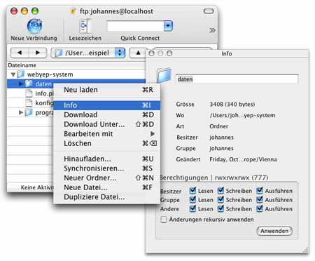

Einrichten, Technische Details
Technisch gesehen werden beim Einrichten die Unix-Datei-Rechte für einen bestimmen Unterordner des webyep-system Ordners (namens "daten") gesetzt und zwar auf den Wert "schreiben, lesen und ausführen erlauben für: alle" - dies entspricht dem Unix Modus "0777".
Warnung: Eine unsichere PHP Konfiguration durch den Provider kann dazu führen, dass PHP Skripts in anderen Websites dieses Providers oder Anfreifer von außen auf die WebYep-Daten Ihrer Website zugreifen können. Dies gilt nicht nur für WebYep sondern für alle PHP Skripts Ihrer Website! Informieren Sie sich ggf. bei Ihrem Provider, ob die PHP Engine Ihres Webspaces sicher konfiguriert ist (durch entsprechende Einstellung von "open_base_dir" und Abschalten von "register_globals" und "allow_url_fopen").
Um WebYep ohne Dreamweaver "einzurichten", müssen also die Zugriffsrechte das "daten" Ordners innerhalb des webyep-system Ordners am Server entsprechend gesetzt werden.
Hier als Beispiel die Vorgehensweise bei Verwendung des Programms "CyberDuck" zum FTP Transfer:

Klicken Sie sich zum "daten" Ordner im webyep-system Ordner durch. Klicken Sie diesen dann mit der rechten Maustaste an (bzw. bei gehaltener Strg Taste) und wählen Sie aus dem erscheinenden Menü "Info".
Im erscheinenden Fenster können Sie nun die Zugriffsrechte setzen – klicken Sie danach auf "Anwenden".